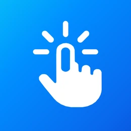

ClikoSpido Launcher en vidéo
En 35 secondes, découvrez les grandes touches, les contacts favoris et le Mode Famille de ClikoSpido Launcher sur Android.
Découvrir l’application
ClikoSpidoLAUNCHEREn 35 secondes, découvrez les grandes touches, les contacts favoris et le Mode Famille de ClikoSpido Launcher sur Android.
Découvrir l’application